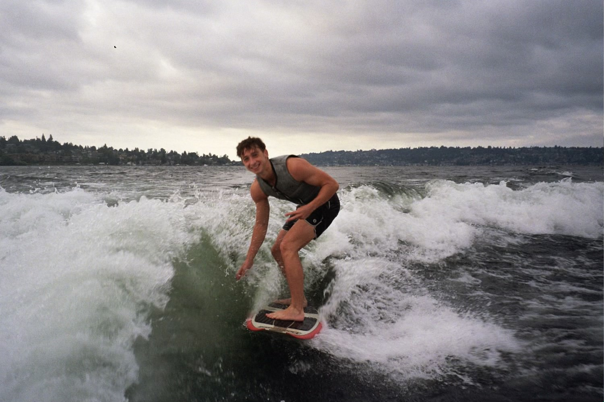

Second Blog

Hey! I'm Nolan Knievel
I'm from Seattle, WA and am currently a second year computer science student at Cal Poly San Luis
Obispo.
School keeps me busy, but outside of the classroom I love to swim, work out, run, camp, and play piano.